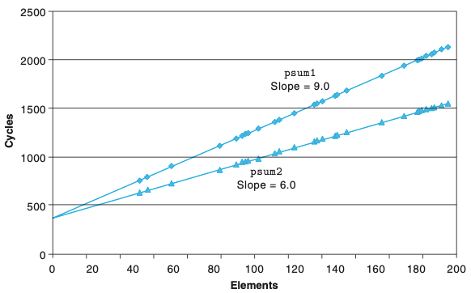
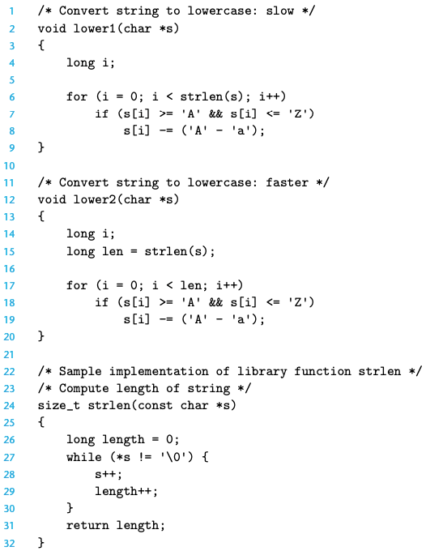
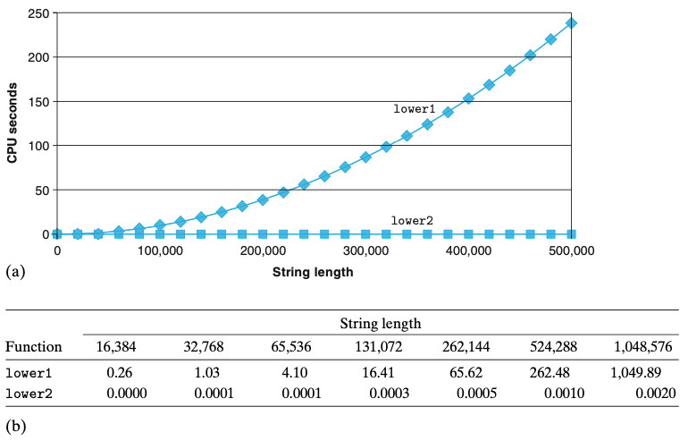
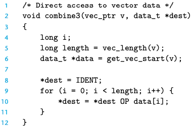
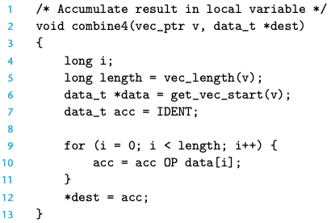
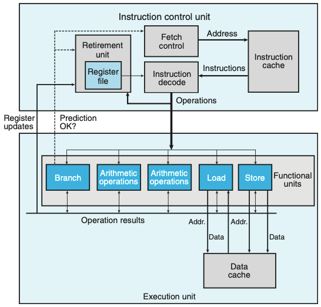
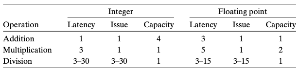
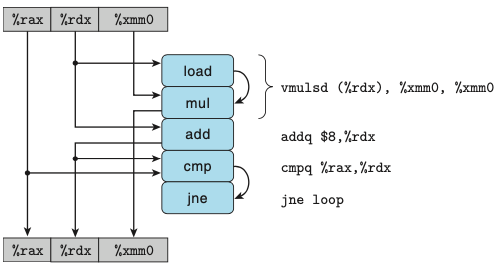
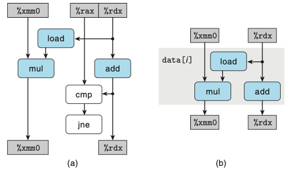

Chapter 05. 프로그램 성능 최적화하기
- 프로그램을 작성하는 주목적은 모든 가능한 조건에서 프로그램이 정확하게 동작하도록 하는 것이다.
- 프로그래머는 명확하고 간결한 코드를 작성해야하고, 이해하기 쉽고, 코드를 검토할 때와 수정할 때 다른사람들도 코드를 읽고 이해할 수 있어야 한다.
- 효율적인 프로그램을 작성하는 방법
- 적절한 알고리즘과 자료구조를 선택해야한다.
- 컴파일러가 효과적으로 최적화해서 효율적인 실행코드로 바꿀 수 있는 소스코드를 작성해야 한다.
- 작업을 부분으로 나누어 멀티코어와 멀티프로세서의 조합을 갖는 컴퓨터에서 병렬로 계산한다.
- 프로그래머는 컴파일러를 도와서 쉽게 최적화될 수 있는 코드를 작성해야한다.
- 불필요한 작업 제거
- 불필요한 함수호출 제거
- 조건 테스트 제거
- 메모리 참조 제거
- 인스트럭션-수준 병렬성을 제공
- 불필요한 작업 제거
5.1 최적화 컴파일러의 능력과 한계
- 컴파일러는 프로그래머의 코드를 자동으로 최적화 해준다.
- 하지만 특정 코드는 컴파일러가 자동으로 최적화해줄 수 없다.
- 두 개의 포인터가 같은 메모리 위치를 가리킬 수 있는 경우(메모리 연결memory aliasing)
- 함수 호출
- ex) 호출되는 횟수에 따라 프로그램의 동작이 변경 되는 경우(부가효과 side effect)
- 위 항목들이 ‘최적화 장애물blocker’이 되는데, 이것은 컴파일러가 최적화된 코드를 생성하기 위한 기회를 제한한다.
5.2 프로그램 성능의 표현
- CPE : 요소당 측정 사이클metric cycle

5.3 프로그램 예제
- 코드를 최적화하는 방법은 다음과 같은 방법들이 존재한다.
- 타깃 머신의 특징을 고려하지 않은 최적화 기법
- 루프 비효율성 제거하기
- 프로시저 호출 줄이기
- 불필요한 메모리 참조 제거
- 최신 프로세서의 인스트럭션 수준 병렬성을 고려한 최적화 기법
- 루프풀기
- 병렬성 높이기
- 재결합 변환
- 타깃 머신의 특징을 고려하지 않은 최적화 기법
최신프로세서의 인스트럭션 수준 병렬성을 고려하기 위해 5.7절에서 최신프로세서에 대해서 조금 다루고 넘어간다.
5.4 루프 비효율성 제거하기
- 테스트 조건이 루프의 매 실행마다 평가된다.


- lower1은 n^2
-
lower2는 n
- 겉보기에는 의미 없는 코드가 감춰진 잠재적 비효율성을 갖고 있다.
- 적은 데이터 셋으로 시험하고 분석되지만, 프로그램이 궁극적으로 배포되면, 프로시저가 백만 개 문자들의 스트리에 적용될 수 있다.
- 이러한 상황에 안전했던 코드조각이 주요 성능 병목이 되게된다.
- 경쟁력 있는 프로그래머 역할의 한 부분은 지속적으로 소개되는 그러한 잠재적 비효율성을 피하는것이다
5.5 프로시저 호출 줄이기
- 프로시저 호출은 오버헤드를 발생시키고 대부분의 프로그램 최적화 작업을 방해할 수 있다.
- 경계값을 체크하는 것은 배열의 임의로 접근하는 경우를 처리할 때에는 유용할 수 있지만, 특정 경우에는 모든 참조 시도가 유효하다.
- 예제에서 각 벡터의 원소를 가져오기 위해서 작성된 함수(벡터 경계값 체크 함수)를 매번 호출하는 대신 배열에 직접 접근한다.
- 결벽주의자들은 이렇게 변환하는 것이 프로그램 모듈성을 심각하게 훼손한다고 말할 수 있다.
- 실용적인 프로그래머라면 이러한 변환과정이 고성능 결과를 얻기 위해서 필요한 단계라고 주장할 것이다.
5.6 불필요한 메모리 참조의 제거


- 결과값을 임시로 누적한다.
- 누적값을 지역변수 acc에 저장하면 매 루프 반복실행마다 메모리에서 가져오고 갱신된 값을 다시 기록할 필요가 없어진다.
5.7 최신 프로세서 이해하기
- 코드의 성능을 더 개선하기 위해서는 프로세서의 마이크로구조, 즉 프로세서가 인스트럭션을 실행하도록 하는 하부 시스템 설계를 활용하는 최적화 기법을 고려해야한다.
- 실제 프로세서에서 많은 인스트럭션들이 동시에 처리된다.
- 이것을 인스트럭션 수준 병렬성이라고 부른다.
- 두 개의 서로 다른 하위 경계값lower bounds가 프로그램의 최대 성능을 결정한다.
- 지연시간 경계값 : 일련의 연산들이 엄격하게 순서를 준수하여 수행되어야 할 때 발생
- 처리량 경계값: 프로세서의 기능 유닛들의 기본 계산 능력을 결정한다.
5.7.1 전체적인 동작
- 최신 프로세서는 인스트럭션이 실행되는 순서가 기계어 수준 프로그램에서의 순서와 일치할 필요가 없다.
- 무순서 out-of-order라고 한다.

- 위의 그림은 최신 프로세서의 블록 다이어그램이다.
- 인스트럭션 제어 유닛(ICU)은 인스트럭션들을 메모리에서 읽고 일련의 기본연산들을 생성하는 역할을 수행한다.
- 그 이후 실행 유닛(EU)은 연산을 수행하여 분기가 정확히 예측되었는지 여부를 나타낸다.
- 최신 프로세서들은 ‘분기 예측branch prediction’이라는 기술을 사용한다.
- ‘추정 실행speculative execution’이라는 기술을 사용해서 분기가 이동해야 하는 위치에 있는 인스트럭션을 선입하고 해독한다.
- Fetch control 블록은 분기예측과 연동해서 어떤 인스트럭션을 선입할지를 결정한다.
- 추정 실행을 사용해서 연산들이 계산되지만, 확실할 때까지 최종 결과값들은 데이터 메모리나 레지스터에 저장되지 않는다.
결국 최신 프로세서들은 ‘무순서로 연산들을 병렬로 진행한다.’라고 말하는 것 같다. 하지만, 데이터 의존성이 있는 경우에는 병렬로 진행할 수 없기 때문에 지연이 발생하고, 이런 데이터 의존성은 컴파일러가 최적화를 할 수 없다.(다른 코드로 변경시 무조건적으로 무결성하다는 것을 입증할 수 없어서) 그렇기 때문에 우리는 데이터 의존성을 줄일 수 있는 코드를 작성하여 최적화를 한다.
5.7.2 함수유닛의 성능
- 발급시간 issue time: 두 연산 사이에 소요되는 최소 사이클 수
- 용량 capacity: 해당 연산을 수행할 수 있는 함수 유닛의 수
- 지연 latency: 실제 연산을 수행하는 데 걸린 클럭 사이클 수

- 위의 그림은 인텔 코어 i7의 지연시간과 발급시간 특성이다.
기계수준 코드로부터 데이터흐름 그래프로의 변환

- combine4에 대한 내부 루프의 그림
- 인스트럭션들은 동적으로 하나 또는 두 개의 연산으로 번역된다.
- 각각은 다른 연산들 또는 레지스터들로부터 값들을 받고 다른 연산과 레지스터를 위한 값들을 생성한다.
- 루프를 구성하는 코드부분에 대해서 접근하게 되는 레지스터들을 다음의 네 종류로 구분할 수 있다.
- 읽기전용 Read-only : 데이터 또는 메모리 주소를 계산하기 위한 소스 값들로 사용된다.
- 쓰기전용 Write-only : 데이터 이동 연산의 목적지로 사용된다.
- 지역적 Local : 루프 내에서 사용되고 갱신되지만, 한 번의 반복 실행에서 다른 실행으로의 의존성은 없다.
- ex) cmp에 의해 갱신되며 jne 연산에 의해 사용된다.
- 루프 Loop : 한 번의 반복실행에서 생성된 값은 다른 실행에서 사용되는 방식으로 소스 값들로 사용되며 루프의 목적지로도 사용된다.
- 루프 레지스터들 간의 연산들의 연결이 성능을 제한하는 데이터 의존성을 결정한다.

- 위의 그림은 combine4 연산들을 데이터 흐름 그래프로 추상화하였다.
- (b)를 보면 데이터의존성을 확인할 수 있다.
5.8 루프풀기
- 루프 풀기는 루프의 매 반복실행마다 계산되는 원소의 수를 증가시켜 루프에서의 반복 실행 횟수를 줄이는 방법이다.
- 루프 풀기는 두가지 측면에서 성능을 개선할 수 있다.
- 루프 인덱스 계산과 조건부 분기와 같이 프로그램의 결과와는 직접적으로 관련 없는 연산들의 수를 줄인다.
- 전체 계산의 핵심 경로에 있는 연산의 수를 줄이기 위한 추가적인 코드변환을 할 수 있는 방법들을 적용할 수 있게 된다.
/* default */
for(i=0; i<limit; i+=1){
acc = acc OP data[i]
}
/* Combine 2 elements at a time (2X1 루프풀기)*/
for(i=0; i<limit; i+=2){
acc = acc OP data[i] OP data[i+1]
}- 위 코드와 같이 반복 횟수를 줄인다.
- kX1로 가능하다.
5.9 병렬성 높이기
- 데이터 의존성을 줄이고자 병렬성을 높이는 방법이다.
다수의 누산기 사용
/* default */
for(i=0; i<limit; i+=1){
acc = acc OP data[i]
}
/* Combine 2 elements at a time (2X1 루프풀기)*/
for(i=0; i<limit; i+=2){
acc0 = acc0 OP data[i]
acc1 = acc1 OP data[i+1]
}- 위 코드와 같이 홀수와 짝수를 나누면 데이터 의존성이 사라진다.
재결합 변환
/* default */
acc = (acc OP data[i]) OP data[i+1];
/* reassociation transform (2X1a 루프풀기) */
acc = acc OP ( data[i] OP data[i+1] );5.11 일부 제한 요인들
- 최적화중 프로그램의 성능을 제한하는 다른 요소들이 존재한다.
5.11.1 레지스터 넘기기
- 프로그램이 사용 가능한 레지스터의 수를 넘어가는 병렬성을 가지면, 메모리에 저장하게 되는 레지스터 넘기기 spilling 방법이 사용된다.
- 이 때 런타임 스택에 공간을 할당하기 때문에 성능이 저하된다.
5.11.2 분기예측과 예측비용
- if문보다 삼항연산자가 더 빠르다.
if문은 statement, 삼항연산자는 expression이다.
5.12 메모리 성능의 이해
- Load의 성능
- 반복실행에 대한 로드 연산은 이전 반복실행에 대한 로드 연산이 완료되었을 때까지는 시작할 수 없다.
- Store의 성능
- store 연산은 레지스터 값을 메모리로 기록한다.
- store 연산은 데이터 의존성을 발생시키지 않는다.
- load 연산만이 store 연산의 결과에 영향을 받는다.
5.13 실제상황: 성능개선 기술
- 프로그램 성능의 최적화하는 기본적인 전략들
- 상위수준 설계 : 적절한 알고리즘과 자료구조를 선택
- 기본 코딩원칙 : 최적화 장애물 피하기
- 함수 호출 제거
- 계산은 루프 밖으로 이동
- 불필요한 메모리 참조 제거
- 중간 값들을 저장하는 임시 변수 사용(데이터 의존성 피하기)
- 최종 값이 계산되었을 때에만 전역변수나 배열에 결과 저장(load 의존성 피하기)
- 하위수준 최적화 : 하드웨어의 성능을 활용할 수 있는 코드 작성
- 루프풀기
- 다중누산기와 재결합 기법 사용
- statement보다 expression 사용하기
마무리
2장부터 4장까지 컴퓨터가 해석할 수 있는 언어들과 해당 언어들을 컴퓨터가 어떻게 해석하는지를 공부했다. 해당 방법들을 통해서 5장에서는 프로그래머들이 어떻게 코드를 작성해야 하는지를 배웠다. 만약 컴퓨터가 코드를 해석하는 방법을 몰랐더라면, 코드 최적화 방법을 공부할 때 정확히 이해할 수 없었을 것이다. 작성한 코드에서 인스트럭션 조합과 기계어가 어떻게 동작하는지를 항상 생각하자.
추가적으로, CSAPP 포스팅 방식을 조금 변경해야할 것 같다. 4장 초반까지는 솔직히 굉장히 어려웠다. “무슨 말을 하는지 이걸 도대체 컴퓨터가 어떻게 해석한다는거지?” 라고 생각하며 의문으로 가득차 거의 모든 내용을 포스팅한 것 같다. 하지만, 4장 후반 SEQ와 파이프라이닝을 공부하고 “아! 이래서 지금까지 이런 내용들을 공부했구나!” 그리고 5장을 공부하면서 뭔가 “득도”를 하게 된 것 같다. 다양한 부분들의 이해가 빨라졌다. 앞으로 챕터를 공부하고 나의 방식으로 녹인 후 포스팅을 하는 것으로 포스팅 방향을 바꿀 것이다.
6장은 드디어 메모리 파트이다. 너무 기대된다!